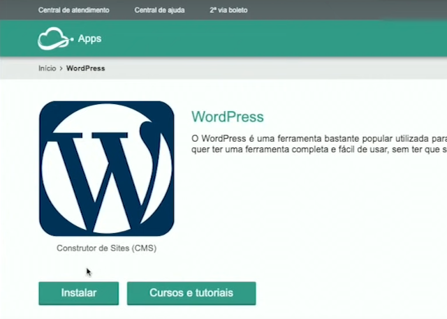
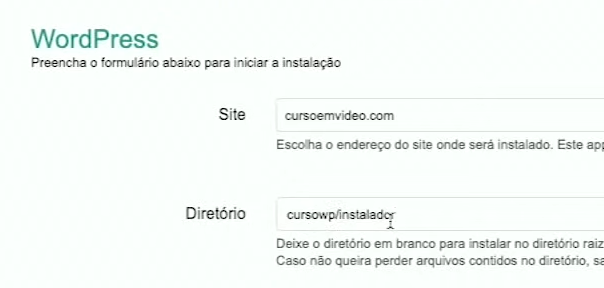
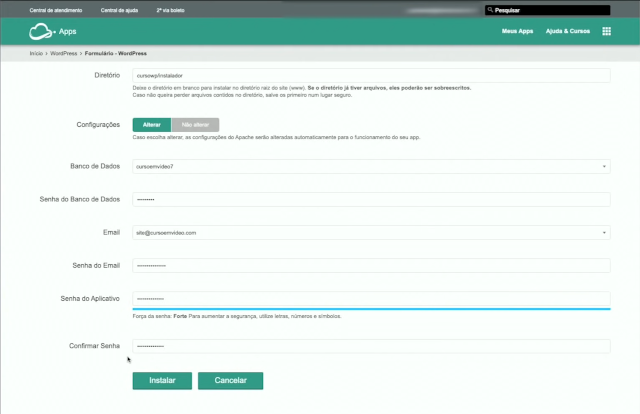
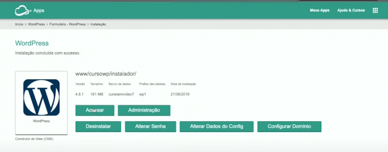

Instando o WordPress pelo painel da Hostnet:
1º Ao acessar pela primeira vez o painel de controle da Hostnet, acesse construtor de Site/blog Wordpress

2º Clik em Instalar

Caso você tenha o seu domínio próprio, preencha o campo Site. Agora, em situações em que você não tenha alterado o nome da pasta do wodpress, você tem a opção de deixar tudo na pasta (www)

3º Check - Alterar
4º - Selecione um Banco de Dados
5º - Digite a Senha
6º - Digite a Senha do Aplicativo
7º - Confirme a Senha do Aplicativo
7º - Click em Instalar
Importante - URL amigável
Pesquise: como instalar URL amigável para poder se posicionar no GOOGLE

Instalado o WordPress:
Agora você tem acesso ao menu: Acessar; Administração; Desinstalar; Alterar Senha; Alterar Dados de Configuração; Configurar Domínio
Na versão do instalador automático através da HostNet, a maioria dos plugins essenciais já vêm instalado e configurado.